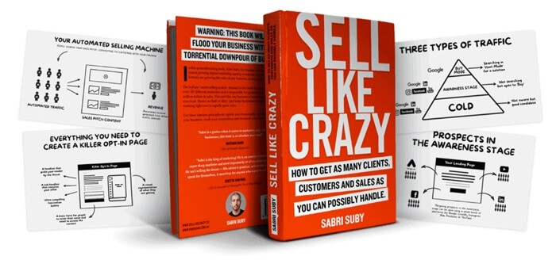
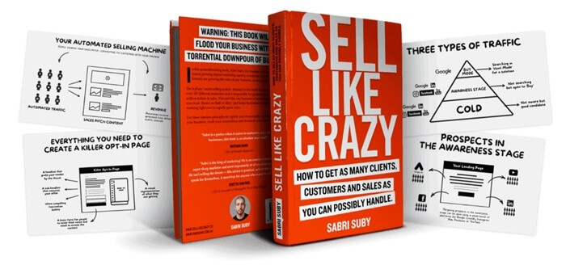
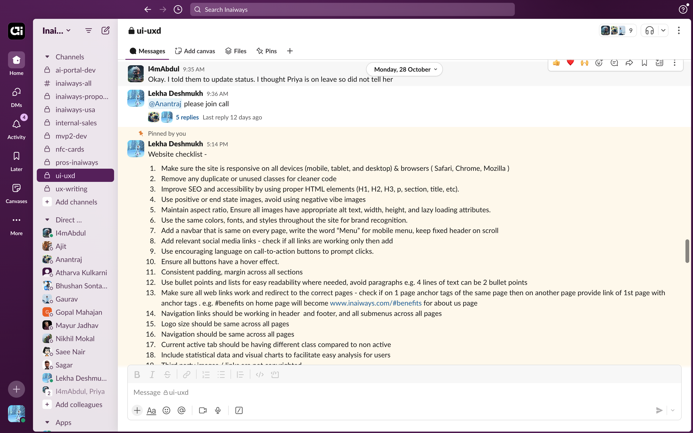
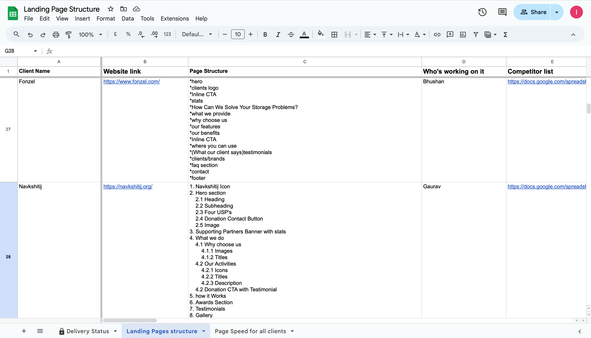
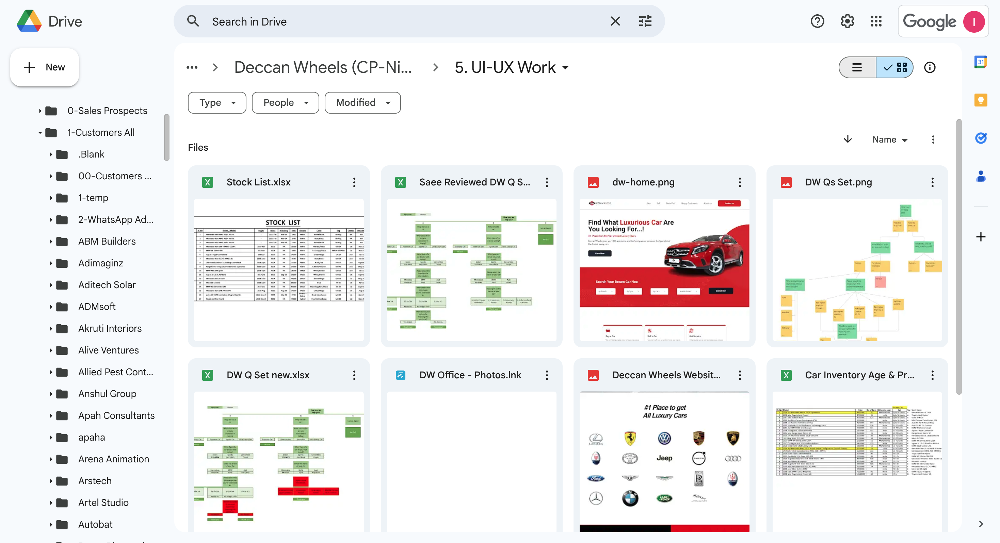
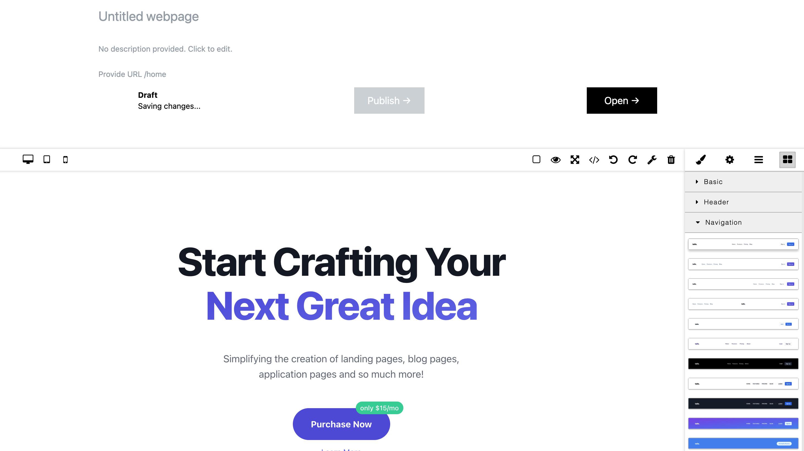
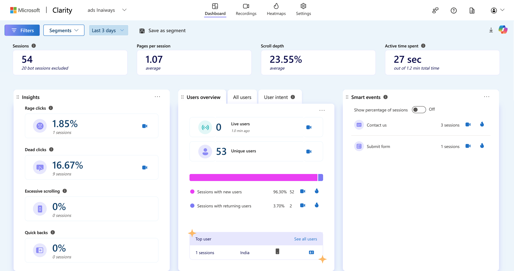

Creating AI prompts for Google Ads Landing Pages used by 100+ Premium Clients by building a
scalable framework for Landing Pages
Objective
Design a scalable high-conversion landing page framework that generates highly qualified
leads for clients across 20+ domains using AI-powered Google Ads.
Key Achievements
- 130+ impactful landing pages delivered to over 100 clients.
- 25,000+ high-quality leads generated.
- Reduced landing page creation time from 25 days to 20 minutes in 3 iterations over 1.5 years.
Context
To kickstart any successful Google Ads campaign, an optimized and high-performing landing
page is critical. This case study showcases the development and refinement of a landing page
framework designed to enhance efficiency, streamline processes, and ensure timely delivery
for maximum campaign success.
Market Gap Addressed
The Inaiways AI-powered Google Ads platform bridges a significant market gap by dynamically
generating contextual landing pages and ad content. This system optimizes ads continuously,
24/7, using real-time user search patterns to maximize relevance and conversions. Before
this framework, creating landing pages was a manual, time-intensive process that lacked
scalability, resulting in
 

Business Concerns
- Increased client demand for funding rounds necessitated faster project turnarounds.
- Delays in content delivery from clients and inefficient design processes caused bottlenecks.
- Lack of standardized templates led to inconsistencies across industries.
My Role
As Co-Founder and UX Lead, I:
- Spearheaded the landing page creation process from research to execution.
- Trained and mentored the team to adopt Lean UX principles for iterative improvements.
- Collaborated with clients, stakeholders, and cross-functional teams to align goals with business KPIs.
Business KPIs for the UX Department
- Build the team’s capacity to serve 30+ clients/month.
- Reduce landing page delivery timelines to under 5 days.
- Improve lead quality and conversion rates through optimized designs.
Logging and Communication
A structured Google Drive folder and Excel
tracker were created for organizing assets and tracking milestones, with Omnifocus
prioritizing tasks. Slack channels and regular huddles kept the team aligned, while
design feedback through Playtailwind links was documented in Excel to streamline
iteration. All files were versioned within Google Drive for easy, up-to-date access
across the team.
Planning
- Google Drive Folder & Excel tracking
- Omnifocus
- Omnifocus

Communication
- Slack
- Huddles
- Huddles

Feedback
- Playtailwind links
- Comments on Excel
- Comments on Excel

Versioning
- Google Drive
Lean UX Process: Think, Make, Check
Iteration 1: Building the Foundation - Jan to March 2023, gaps till August 2023
Think
- Objective: Develop a repeatable and scalable framework to reduce delivery time.
- Research & Insights:
- Sabri Suby’s Sell Like Crazy (Book): Identified as the most effective framework for high-conversion Google Ads landing pages.
- Jim Huffman's Conversion Rate Optimization Course (Linkedin): This course again reinforced the learnings from sell like crazy, also understood how to test qualitative and quantitatively
- Alisha Conlin-Hurd (YouTube): Insights into user-intent-focused designs and conversion psychology.
- Alex Cattoni (Youtube): Strategies for crafting emotionally resonant copywriting for landing pages.
- For every new domain I carried out interviews with client stakeholders that included the Client's customers, CEO, CMO or Marketing HODs or Project Owners. This was done till we could draw a pattern for each domain.
- Stakeholder interviews revealed delays caused by incomplete client assets like testimonials, images, and stats.
- Lack of reusable templates increased the time-to-market for each page.
Make
- Created 300+ reusable HTML templates for modular landing page sections.
- Developed a goto file documenting layouts for specific industries like manufacturing, education, interior design, consulting, healthcare, etc.
- Trained the team on resolving Google PageSpeed issues for better performance.
- Trained team on performing competitive analysis for landing page design.
- Streamlined communication by introducing:
- Google Drive folders for asset management.
- Excel trackers for project milestone tracking.
- Slack channels for real-time collaboration.
- Installed MS Clarity to track user behavior metrics such as dead clicks, rage clicks and scroll depth.
- Used internal CRM and google analytics to track number of leads and lead quality.

Editor for Landing Pages

MS Clarity Example for studying Quantitative Metrics
Check
- Results:
- Reduced landing page creation time from 25 days to 10 days.
- Improved alignment between content, design, and business teams using structured workflows.
- Challenges:
- Business: Clients delayed delivering assets, resulting in extended timelines of 60–90 days.
- Design: Templates led to repetitive layouts, reducing creativity.
- Team: Inefficient handoffs between content writers and designers caused bottlenecks.
Iteration 2: Process Optimization - Oct 2023 to Dec 2023
Think
- Objective: Address bottlenecks from the first iteration and improve mobile-first designs.
- Research Insights:
- MS Clarity data: Long scroll lengths reduced engagement on mobile devices.
- Interior design clients required image-heavy layouts, manufacturing clients preferred concise, solution-focused sections.
- Optional sections (e.g., comparison tables) data took time to be delivered by client often caused delays in project timelines.
Make
- Deferred optional sections like "Why Choose Us" for post-launch updates.
- Introduced horizontal scrolling for image-heavy sections in domains like interior design.
- Merged problem and solution sections for manufacturing clients to streamline the experience.
- Expanded the team by hiring:
- Two junior designers for HTML/CSS support.
- One senior designer to mediate workflows and ensure quality.
- Conducted training sessions on:
- Selecting colors and fonts inspired by client branding.
- Using stock image tools like Envato Elements and Adobe Stock.
Check
- Results:
- Reduced landing page creation time to 3 days.
- Enhanced mobile-first designs tailored to client-specific needs.
- Challenges:
- Business: Frequent revisions to images and optional sections extended timelines.
- Design: Repetitive designs in templates required rethinking layout creativity.
- Team: Content-design alignment delays highlighted a need for clearer guidelines.
Iteration 3: AI-Powered Landing Pages - Starting June 2024
Think
- Objective: Leverage AI for exponential scalability and reduce repetitive tasks.
- Research Insights:
- Manual workflows, even with optimizations, were limiting scalability.
- Patterns identified across domains (e.g., real estate, software, and healthcare) could be standardized for AI.
- AI tools offered opportunities to automate repetitive tasks like layout generation and text formatting.
Make
- Developed AI prompts for each landing page section, standardizing inputs like:
- Character limits for headlines and descriptions.
- Variables for design consistency (e.g., colors, fonts).
- Created 15 domain-specific templates to accommodate diverse client needs.
- Introduced a design system for branding consistency across all pages.
- Collaborated with the CEO to define the data format for AI integration.
Check
- Results:
- Reduced landing page creation time to 20 minutes per page.
- Enabled scalability to serve over 100+ clients across 20+ industries.
- Challenges:
- Business: Educating clients on the capabilities and limitations of AI tools.
- Design: AI outputs required initial manual adjustments for visual appeal.
- Team: Training team members on AI workflows was time-intensive but necessary.
Final Impact Across All Iterations
-
Some examples of Client Impact:
- vGoldenage: are planning to setup a new facility for old age care near Mumbai as their current Google ads landing pages are generating 300% increase in revenue.
- Will Jini: Started targeting international business after successfully crossing their benchmark in Indian Demographic. They get 120% more leads than their old ads landing page.
- Fonzel: Increase in revenue by getting highly qualified leads with the framework I created for Landing pages. They've got leads like - like Mercedes Benz, ONGC, Edifice, Tata Communications, etc. and planning their next funding round.
- Delivered 130+ landing pages across 20+ industries, including:
- Software services, manufacturing, healthcare, real estate, interior design, education (online/offline), and financial services.
- Generated 25,000+ qualified leads for clients.
- Reduced delivery timelines from 25 days to 20 minutes, achieving exponential scalability.
- Created a self-sustaining framework that clients could extend for future campaigns.
Learnings Across Iterations
- Client-Centric Adjustments:
- Proactively communicating with clients during the sales closure helped streamline asset collection and reduced delays in delivery timelines.
- Flexibility in addressing UI change requests ensured client satisfaction while maintaining design standards.
- Domain-Specific Patterns: Recognizing emerging patterns across industries allowed us to document tailored landing page sequences for 20+ domains, making future projects faster and more effective.
- Data-Driven Decisions: User behavior insights from tools like MS Clarity enabled iterative improvements, such as reducing scroll depth or merging sections for higher engagement.
- Team Efficiency:
- Training team members on UI/UX principles, color selection, and image curation empowered them to make autonomous decisions, improving quality and speed.
- Onboarding new designers with well-documented processes and templates ensured smoother transitions.
- AI Integration: While AI drastically reduced production time, initial manual fine-tuning was essential to achieve high-quality results. Continuous documentation and prompt refinement improved the AI system over time.
- Creative Flexibility: Encouraging the team to explore new design layouts and patterns ensured that templates didn’t become repetitive or stale. Listening to end-user feedback enhanced adaptability across industries.